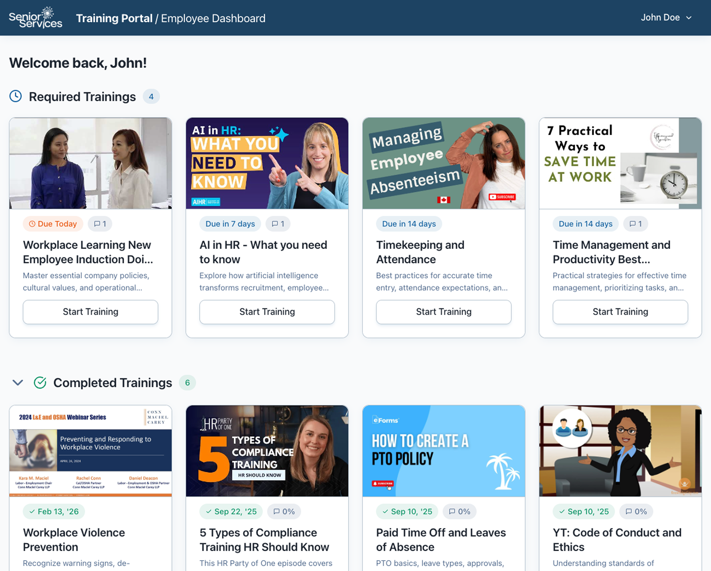
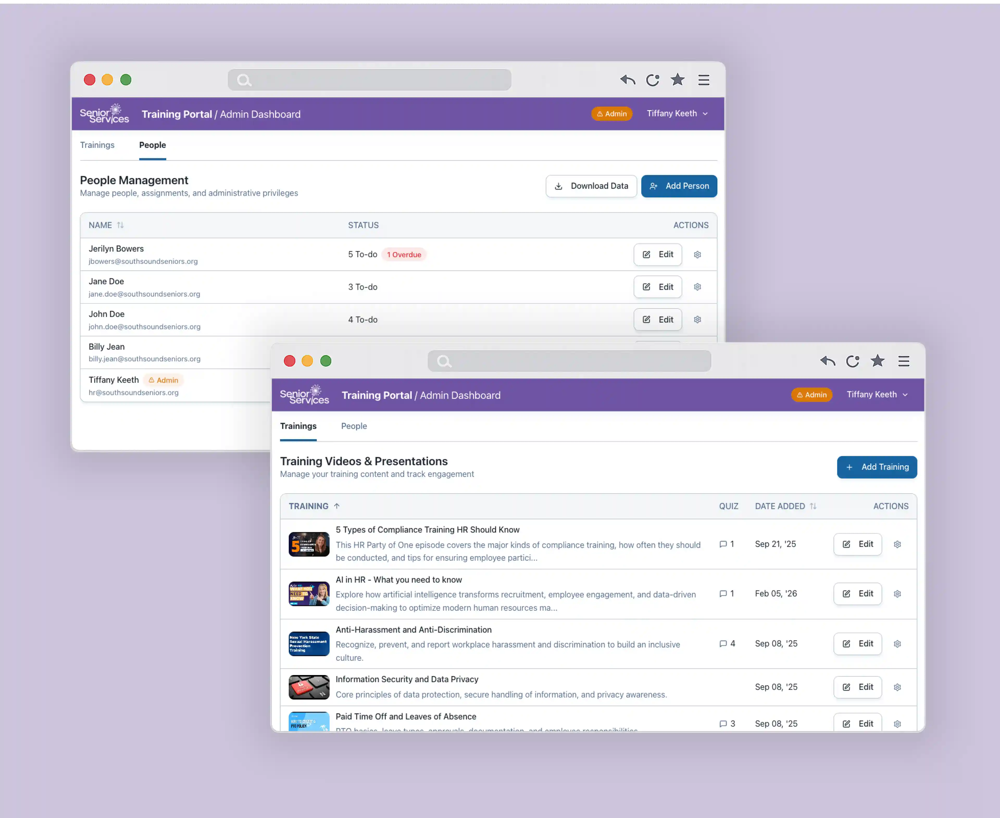
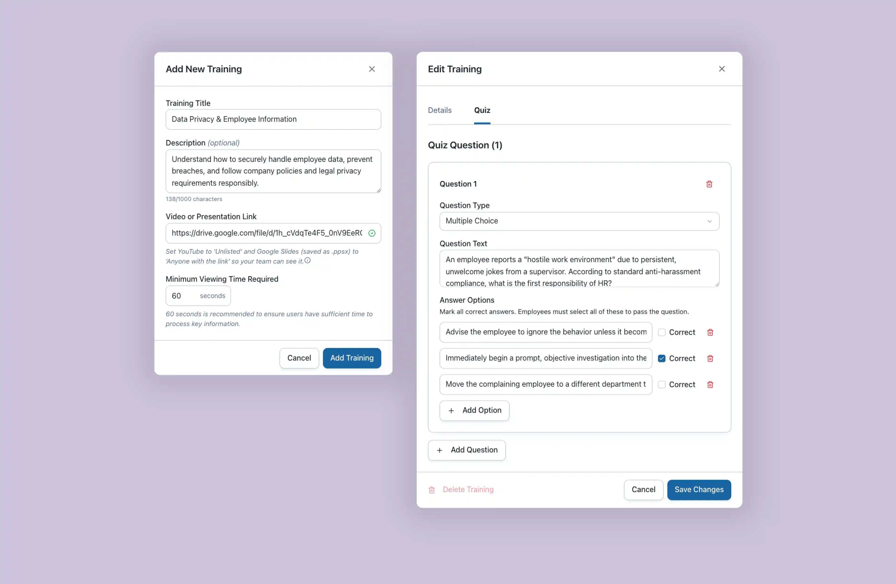
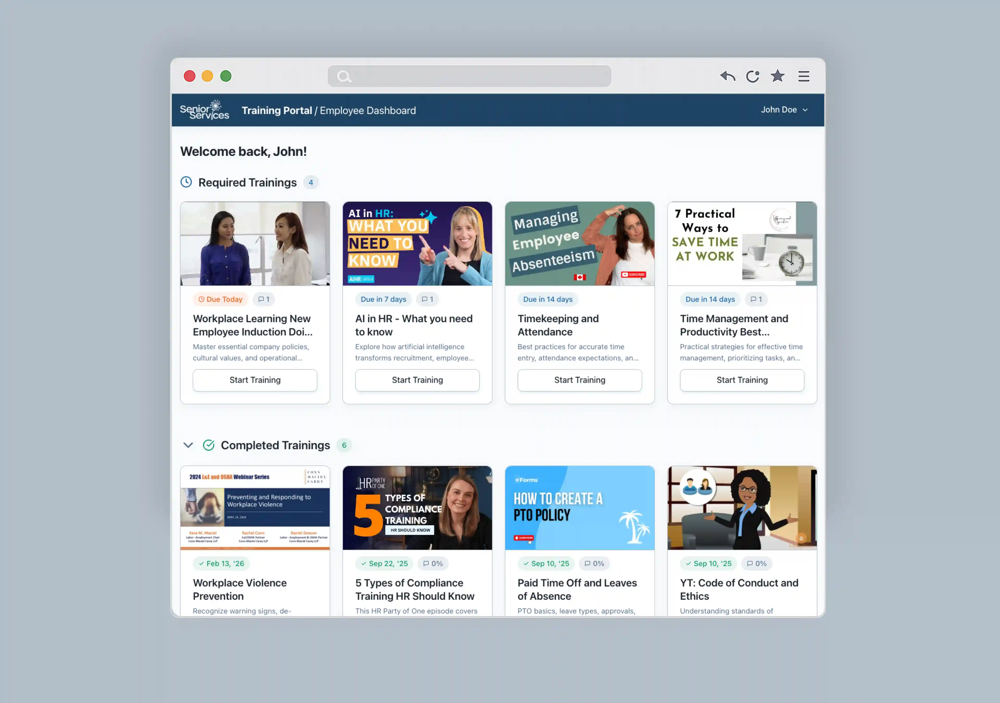
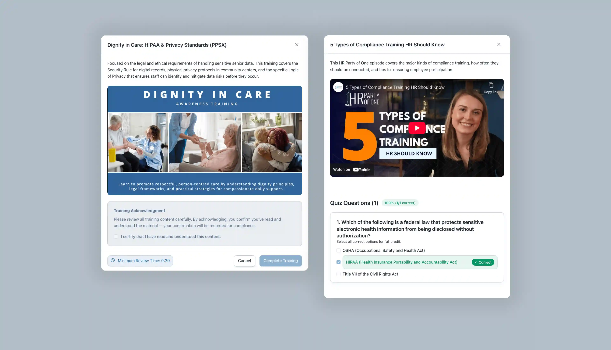

Staff Training Portal Built for Audit-Ready Compliance
I designed and built a training compliance platform for a lean non-profit that automates compliance tracking and runs at $0/month.
Project at a Glance
Problem: Manual training management created 12 workdays of unnecessary overhead annually and a real compliance liability with no centralized system to demonstrate audit readiness. The solution had to meet compliance standards, run at zero cost, and be maintainable by a non-technical team.
My Role: Solo product lead, designer, and engineer across the full lifecycle, from requirements to production launch.
Action: Built a custom training portal with AI-assisted development, featuring role-based access, automated compliance guardrails, quiz versioning, audit logging, and a handover-ready architecture designed for a non-technical team to maintain.
Result (Projected): ~70% reduction in time spent managing employee compliance training, a full audit-ready record exportable at any time, zero ongoing operating cost, and a system the client team can maintain independently without technical support.

The Context
Senior Services of South Sound is a non-profit dedicated to improving the lives of seniors through essential services and community connection. With a lean staff and no dedicated tech team, internal processes have to be efficient and largely self-sufficient.
The Challenge
Managing staff training manually had created two compounding problems: wasted administrative capacity and real compliance risk.
- Wasted Capacity: The HR Director, who also serves as Deputy Executive Director, was spending 8 hours a month managing staff training manually, time that could not be justified given her broader responsibilities.
- Compliance Risk: Training records were scattered across folders and email threads with no centralized system to demonstrate audit readiness, creating real liability risk if records were found incomplete during a state audit.
The Constraints
The solution had to work within four key boundaries:
- Zero budget: As a lean non-profit, the system had to match professional-grade quality at $0/month.
- No dedicated tech team: No developer available to support or troubleshoot the system. It had to be stable enough to run without ongoing technical intervention and documented well enough for a non-technical operator to maintain it independently.
- Regulatory accountability: Real audit risk from funders, accreditors, and regulators, with no centralized system to demonstrate compliance.
- Non-technical user base: Staff have demanding jobs. The system had to offer an experience that was easy to use and didn't add to their workload.
The Approach
The organization had no budget for software, which meant off-the-shelf LMS (learning management system) platforms were not an option. Every architectural decision had to work within free-tier limits without compromising on quality or compliance.
Supporting multiple training content types, video and slide presentations, turned out to be more complex than expected. My initial approach was to accept any file format and allow direct file uploads to give admins maximum flexibility, but each format behaved differently and made it difficult to apply consistent compliance guardrails across all of them. Delegating hosting to YouTube for video and Google Drive for presentations solved both problems while keeping costs at zero.
The Build
I used an AI-assisted development workflow, moving from Lovable to Claude Code as the project's complexity grew. The result was a production-ready system delivered end-to-end.
Centralized Administrator Portal
Before this system, the HR Director, who also serves as Deputy Executive Director, managed all staff training manually. Creating content meant recording herself presenting slideshows across multiple attempts, a time-consuming process for someone with a full executive workload. Assigning training meant sending individual emails or walking up to someone’s desk. Tracking completion meant maintaining spreadsheets. Quizzes were ad hoc and inconsistent. Nothing was automated or centralized.
The admin portal replaces all of that with one place to manage everything:
- Training Management: Create, edit, and manage all training content and quizzes in one place.
- Staff Management: Add staff, assign trainings, and view real-time completion status across the entire team.
- Automated Notifications: Staff receive an email when a training is assigned, removing the need for any manual follow-up.
- Audit-Ready Export: Admins can download a complete record of every staff member’s training history, including completion status, due dates, completion dates, and quiz results. If a regulator or funder requested proof of compliance tomorrow, that record is ready to hand over.
- Staff Records: Accounts are archived rather than deleted when someone leaves. Access is removed immediately but training history is permanently retained. At least one admin must exist at all times and admins cannot remove their own access, ensuring the system stays accessible even if the HR Director leaves the organization.

Personnel & Permission Management
Compliance Training Repository
The Compliance Engine
Washington State nonprofits face real audit risk from funders, accreditors, and regulators, but the regulations don't prescribe exactly how compliance should work in practice. The guardrails below reflect deliberate design decisions about what defensible recordkeeping requires, while keeping the experience straightforward rather than intrusive for staff.
- Enforced Viewing: Videos must be watched to 99% completion before a training can be marked complete. The 99% threshold accounts for browser and device differences near the end of a video while ensuring staff cannot simply open a tab and walk away. Presentations use a minimum timer that enforces how long the content must be open before completion is allowed.
- Knowledge Verification: Admins can build and attach a quiz to any training module. Every question must be answered before the training is marked complete, ensuring staff have engaged with and retained the material.
- Randomized Question Order: Questions are presented in a different order for every attempt, which supports scenarios where a training needs to be retaken without staff simply recalling the previous answer sequence.
- Attestation: Before a training can be marked complete, staff must actively confirm they have finished it. This final acknowledgment step ensures completion is always a deliberate action, not an automatic one.
- Compliance Export: Admins can download a full training record for every staff member, including completion status, due dates, completion dates, quiz results, and quiz version. If a regulator or funder requested proof of compliance, that record is ready to hand over immediately.

Training Creation & Editing
Quiz Assessment Builder
The Employee Portal
Staff at South Sound Seniors have demanding jobs. The employee portal was designed to be modern, easy-to-use, and highly accessible.
- Accessibility: The portal meets minimum contrast requirements and uses appropriately sized touch targets, so it works well for everyone on any device.
- Clear Language: Wording throughout is intentionally simple and easy to understand, helping staff complete their requirements without confusion.
- Intuitive Dashboard: Staff can instantly see their assigned trainings, due dates, and completion status without having to dig for anything.
- Saved Progress: Progress is saved automatically so staff can leave a training partway through and pick up exactly where they left off.

Employee Training Portal

Employee Training
Training Knowledge Review
The Handover
A formal IT handover document was a core deliverable from the start. It covers the compliance rationale behind each design decision, step-by-step troubleshooting procedures, cost management guidance, and developer notes written for whoever maintains the system next. Building something stable and well-documented was a priority — the system needed to run reliably without me.

Projected Impact
The system is pre-launch. These projections are based on the HR Director's previous manual workload of 8 hours a month.
- 70-80% reduction in administrative time: Automating tracking, notifications, and record-keeping eliminates the manual follow-up cycle, freeing up an estimated 12 workdays a year for higher-impact work.
- Improved audit readiness: Every completion is automatically recorded with a timestamp, date, and quiz result. A full compliance report can be exported at any time, replacing a process that previously relied on scattered spreadsheets and email threads.
- $0/month operating cost: The system runs entirely on free tiers, bypassing the ongoing software fees that a comparable off-the-shelf LMS would require.
Final Reflection
This project shifted how I think about what’s possible working solo. Using AI-assisted development, I was able to design, build, and ship a production-ready system end-to-end, something that would have required an entire engineering team in a traditional workflow. Building while designing was a big part of what made that work: vetting decisions in a working system surfaces logic gaps and edge cases much faster than static visuals do.